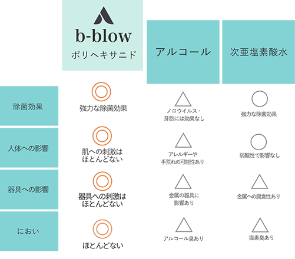

除菌だってこだわりたい、
そんなあなたのためにb-blowは誕生しました。
従来の除菌剤だと匂いが気になって使えない・・・。
子供にも使いたいから、刺激が強いものはなるべく避けたい・・・。
おうちの除菌を１本で済ませたい・・・。
b-blowならあなたのこだわりを全て叶えます。
さっそく、実感できるこだわり除菌を始めてみませんか？
ABOUT
商品概要
次世代の除菌成分、ポリヘキサニヒドって何？
b-blowは、ポリヘキサニドという成分を採用しています。
ポリヘキサニドとは、コンタクトレンズの保存液やウエット
ティッシュにも使われている除菌効果の高い安全な成分のこと。
酵母やカビにも効果があり、アルコールでは除菌できないノロ
ウイルスにも効果があると知られています。
さらには新型コロナウイルスと同じエンベローブ型のウイルス
にも効果があることが証明されています。

アルコールや次亜塩素酸水より注目される秘密は？
よくある除菌剤だと、においがきつかったり手が荒れて
しまうことがありませんか？
ポリヘキサニドとは、コンタクトレンズの保存液やウエット
ティッシュにも使われている除菌効果の高い安全な成分のこと。

b-blowが選ばれる4つの理由
０１ 高い安全性
化粧品などに使われている成分を使用しているため、
お肌が弱い方、お子様にも安心して使用することができます。
無色・無臭であり、ほとんど皮膚刺激が無くてとても扱い
やすい除菌剤です。

０2 消臭効果が長続き
疲れた包摂力を生かして、匂いを取り込み酸化・分解
して消臭します。
乾いても繊維や硬質表面に残って消臭効果が長続きします。
a

03 水に濡れても
落ちにくい
水やお湯でも揮発することなく効果を発揮します。
ご自宅の浴槽水や洗面所。キッチンなどの水回り
にもご利用いただけます。
消えましたか？

04 素材にやさしい
色落ちや金属部分の腐食が気になるお洋服や、普段
消毒したくてもなかなか出来ない鞄など、アルコールや
次亜塩素酸では使い辛い素材でも使用できます。
ありませんでしたか？